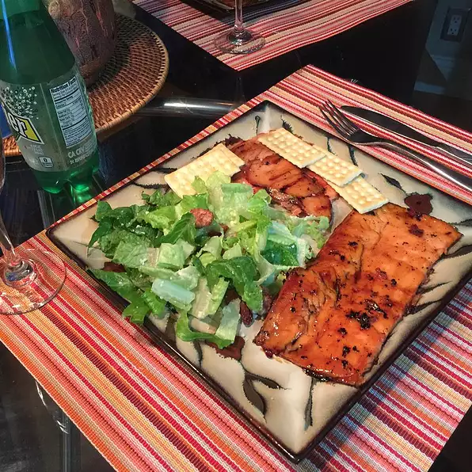

Grilled Cilantro Salmon

Description
Summer is for salmon on the grill! This sensational salmon marinade combines
honey, lime, garlic, and cilantro.
Ingredients
- 1 bunch cilantro leaves, chopped
- 2 cloves garlic, chopped
- 2 cups honey
- juice from one lime
- 4 salmon steaks
- salt and pepper to taste
Steps
-
In a small saucepan over medium-low heat, stir together cilantro,
garlic, honey, and lime juice. Heat until the honey is easily
stirred, about 5 minutes. Remove from heat, and let cool slightly.
-
Place salmon steaks in a baking dish, and season with salt and
pepper. Pour marinade over salmon, cover, and refrigerate 10 minutes.
-
Preheat an outdoor grill for high heat.
-
Lightly oil grill grate. Place salmon steaks on grill, cook
5 minutes on each side, or until fish is easily flaked with a
fork.